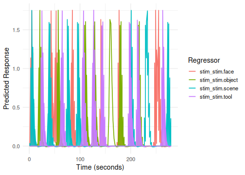
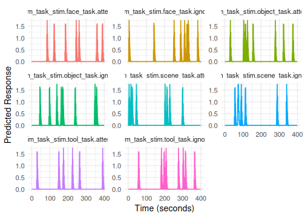
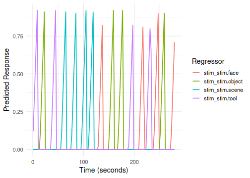
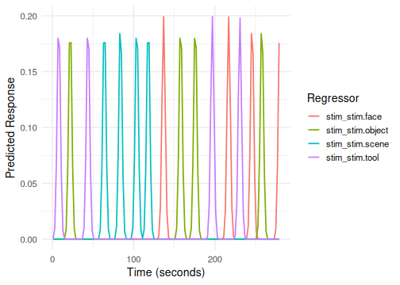
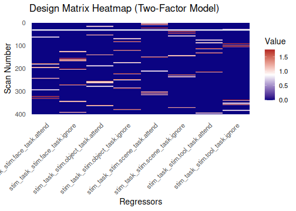

Building Event Models
Bradley R. Buchsbaum
2025-09-18
Source:vignettes/a_04_event_models.Rmd
a_04_event_models.RmdIntroduction: Modeling Task Effects
An event model describes the expected BOLD signal changes related to experimental events (stimuli, conditions, responses, etc.). It forms the core of the task-related component of an fMRI General Linear Model (GLM).
fmridesign primarily uses the event_model()
function to create these models. It takes experimental design
information (event onsets, conditions, durations) and combines it with
Hemodynamic Response Function (HRF) specifications to generate the task
regressors.
This vignette focuses on the common formula-based interface for
event_model(). There’s also a list-based interface
(event_model.list) and a more programmatic
create_event_model() function for advanced use cases.
Quick HRF Primer
The Hemodynamic Response Function (HRF) maps brief neural events to
predicted BOLD signal changes via convolution. In practice,
event_model() builds a set of regressors by convolving an
event train with an HRF or HRF basis.
- What it is: a function or basis set describing the BOLD impulse response.
- How it’s used: event onsets (and durations) are convolved with the HRF to produce regressors for the GLM.
- Canonical vs. bases: single-shape canonical HRFs (e.g., SPMG1) vs. multi-basis sets (e.g., SPMG2/3, tent/FIR, B-splines) that allow response-shape flexibility.
- Durations: events can be modeled as sticks (0 duration) or boxcars (nonzero duration) before convolution, depending on your design.
- Sampling: regressors are generated on the sampling frame defined by
TRand run lengths;fmrihrfhandles appropriate interpolation/upsampling where needed. - Where HRFs live now: HRF definitions, generators, and helpers have
moved to the
fmrihrfpackage. See?hrf,list_available_hrfs(), andgen_hrf()infmrihrffor details.
Timing & Sampling Notes
-
sampling_frame(TR, blocklens): defines the time grid for your design matrix (rows = scans). -
durations: if nonzero, events are boxcars convolved with the HRF; the effective sampling uses an internalprecisionfor accuracy. -
precision: controls oversampling for convolution; lower values increase accuracy at the cost of compute.
A Simple Single-Factor Design (Single Run)
Consider a basic design with four stimulus types (face, scene, tool, object), each presented 4 times for 2s, separated by a variable ISI (4-7s). The total scan duration is 70 TRs (TR=2s).
TR <- 2
cond <- c("face", "scene", "tool", "object")
NSTIM <- length(cond) * 4
# Construct the design table
set.seed(123) # for reproducibility
simple_design <- data.frame(
stim = factor(sample(rep(cond, 4))),
ISI = sample(10:20, NSTIM, replace = TRUE), # Increased ISI range for better spacing
run = rep(1, NSTIM),
trial = factor(1:NSTIM)
)
# Calculate onsets (cumulative sum of duration (2s) + ISI)
simple_design$onset <- cumsum(c(0, simple_design$ISI[-NSTIM] + 2))
# Define the sampling frame (temporal structure of the scan)
sframe_single_run <- sampling_frame(blocklens = 140, TR = TR)
head(simple_design)
#> stim ISI run trial onset
#> 1 tool 12 1 1 0
#> 2 object 20 1 2 14
#> 3 tool 18 1 3 36
#> 4 scene 18 1 4 56
#> 5 scene 18 1 5 76
#> 6 scene 12 1 6 96Now, we create the event_model. The formula
onset ~ hrf(stim) specifies that:
-
onsetis the column insimple_designcontaining event start times. -
hrf(stim)defines a term where thestimfactor levels determine the conditions. Each level will be convolved with the default HRF (HRF_SPMG1).
The block = ~ run argument links events to scanning runs
(here, just one run).
emodel_simple <- event_model(onset ~ hrf(stim),
data = simple_design,
block = ~ run,
sampling_frame = sframe_single_run)
# Print the model summary
print(emodel_simple)Visualizing the Event Model
We can plot the generated regressors using plot() (which
uses ggplot2) or plotly() for an interactive
version.
# Static plot (ggplot2)
plot(emodel_simple)
# Interactive plot via plotly (skipped in non-interactive builds)
if (interactive()) {
plotly::ggplotly(plot(emodel_simple))
}The plot shows the predicted BOLD timecourse for each condition
(stim level) convolved with the default HRF.
Design with Multiple Runs
Let’s extend the design to two runs.
# Construct a design table with two runs
design_list <- lapply(1:2, function(run_idx) {
df <- data.frame(
stim = factor(sample(rep(cond, 4))),
ISI = sample(10:20, NSTIM, replace = TRUE), # Increased ISI range for better spacing
run = rep(run_idx, NSTIM)
)
df$onset <- cumsum(c(0, df$ISI[-NSTIM] + 2))
df
})
design_multi_run <- bind_rows(design_list)
# Sampling frame for two runs of 140s each
sframe_multi_run <- sampling_frame(blocklens = c(140, 140), TR = TR)
head(design_multi_run)
#> stim ISI run onset
#> 1 face 14 1 0
#> 2 object 17 1 16
#> 3 scene 11 1 35
#> 4 face 10 1 48
#> 5 tool 18 1 60
#> 6 face 20 1 80The event_model call remains the same, but now
block = ~ run correctly maps events to their respective
runs based on the run column and the
sampling_frame.
emodel_multi_run <- event_model(onset ~ hrf(stim),
data = design_multi_run,
block = ~ run,
sampling_frame = sframe_multi_run)
print(emodel_multi_run)
# Plot without faceting - the plot method will handle multiple blocks
plot(emodel_multi_run)
Two-Factor Design
Now consider a design crossing stimulus type (stim) with
task instruction (task: attend vs. ignore).
cond1 <- c("face", "scene", "tool", "object")
cond2 <- c("attend", "ignore")
comb <- expand.grid(stim = cond1, task = cond2)
NSTIM_TF <- nrow(comb) * 4 # 8 conditions * 4 reps per run
# Design for two runs
design_two_factor_list <- lapply(1:2, function(run_idx) {
ind <- sample(rep(1:nrow(comb), length.out = NSTIM_TF))
df <- data.frame(
stim = factor(comb$stim[ind]),
task = factor(comb$task[ind]),
ISI = sample(6:15, NSTIM_TF, replace = TRUE), # Increased ISI range for better spacing
run = rep(run_idx, NSTIM_TF)
)
df$onset <- cumsum(c(0, df$ISI[-NSTIM_TF] + 2))
df
})
design_two_factor <- bind_rows(design_two_factor_list)
# Sampling frame for two runs, potentially longer
sframe_two_factor <- sampling_frame(blocklens = c(200, 200), TR = TR)
head(design_two_factor)
#> stim task ISI run onset
#> 1 scene attend 8 1 0
#> 2 scene attend 14 1 10
#> 3 object attend 12 1 26
#> 4 scene attend 11 1 40
#> 5 tool ignore 15 1 53
#> 6 scene ignore 14 1 70The formula onset ~ hrf(stim, task) automatically
creates regressors for the interaction of stim and
task. The term tag will default to
stim_task.
emodel_two_factor <- event_model(onset ~ hrf(stim, task),
data = design_two_factor,
block = ~ run,
sampling_frame = sframe_two_factor)
print(emodel_two_factor)
# Column names will be like stim_task_stim.face_task.attend
# Plotting all interaction terms can be busy; consider plotly
plot(emodel_two_factor)
if (interactive()) {
plotly::ggplotly(plot(emodel_two_factor))
}Amplitude Modulation (Parametric Regressors)
We can model how a continuous variable (like reaction time, RT)
modulates the amplitude of the BOLD response. This is done by including
the modulating variable within the hrf() call.
# Use the simple single-run design and add a simulated RT column
simple_design$RT <- rnorm(nrow(simple_design), mean = 700, sd = 100)
# It's often recommended to center parametric modulators
simple_design$RT_centered <- scale(simple_design$RT, center = TRUE, scale = FALSE)[,1]
head(simple_design)
#> stim ISI run trial onset RT RT_centered
#> 1 tool 12 1 1 0 756.2990 34.12857
#> 2 object 20 1 2 14 662.7561 -59.41425
#> 3 tool 18 1 3 36 797.6973 75.52696
#> 4 scene 18 1 4 56 662.5419 -59.62846
#> 5 scene 18 1 5 76 805.2711 83.10077
#> 6 scene 12 1 6 96 595.0823 -127.08808Here, hrf(stim) creates the main effect term (tag:
stim), and hrf(RT_centered) creates the
parametric modulator term (tag: RT_centered).
emodel_pmod <- event_model(onset ~ hrf(stim) + hrf(RT_centered),
data = simple_design,
block = ~ run,
sampling_frame = sframe_single_run)
print(emodel_pmod)
# Column names: stim_stim.face, ..., stim_stim.object, RT_centered_RT_centered
# Plot the RT parametric modulator term (using its term tag)
plot(emodel_pmod, term_name = "RT_centered") 
if (interactive()) {
plotly::ggplotly(plot(emodel_pmod, term_name = "RT_centered"))
}Interaction Between Factors and Amplitude Modulation
We can also model how a parametric modulator interacts with a factor.
For example, does RT modulate the response differently for faces
vs. scenes? The formula hrf(stim, RT_centered) creates
separate RT modulators for each level of stim.
Here, hrf(stim) is one term (tag: stim).
The interaction hrf(stim, RT_centered) is a second term
(tag: stim_RT_centered).
emodel_pmod_int <- event_model(onset ~ hrf(stim) + hrf(stim, RT_centered),
data = simple_design,
block = ~ run,
sampling_frame = sframe_single_run)
print(emodel_pmod_int)
# Columns: stim_stim.face, ..., stim_RT_centered_stim.face_RT_centered, ...
# Plot the interaction term (using its term tag)
plot(emodel_pmod_int, term_name = "stim_RT_centered")
if (interactive()) {
plotly::ggplotly(plot(emodel_pmod_int, term_name = "stim_RT_centered"))
}Specifying Different HRFs
By default, hrf() uses the SPM canonical HRF
(HRF_SPMG1). You can specify a different HRF basis for any
term using the basis argument within the hrf()
call in the model formula.
Here are the main ways to specify the basis:
-
By Name (String): Use a recognized name for common HRFs:
-
"spmg1"(default),"spmg2","spmg3" -
"gaussian","gamma" -
"bspline"or"bs"(usenbasisto set number of splines) -
"tent"(usenbasisto set number of tent functions)
-
Using Pre-defined
HRFObjects: Pass an exportedHRFobject directly. Examples includeHRF_SPMG1,HRF_GAUSSIAN,HRF_SPMG2,HRF_SPMG3,HRF_BSPLINE,HRF_DAGUERRE,HRF_DAGUERRE_BASIS.Using Custom Functions
f(t): Provide your own function definition that accepts timetas the first argument.Using
gen_hrf()Results: Create a customized HRF usinggen_hrf(),hrf_blocked(),hrf_lagged(), etc., and pass the resultingHRFobject.
Discovering Available Options: You can easily
explore all available HRF types using the
list_available_hrfs() function:
# List basic information about available HRFs
list_available_hrfs()
#> name type nbasis_default is_alias
#> 1 spmg1 object 1 FALSE
#> 2 spmg2 object 2 FALSE
#> 3 spmg3 object 3 FALSE
#> 4 gamma object 1 FALSE
#> 5 gaussian object 1 FALSE
#> 6 bspline generator 5 FALSE
#> 7 tent generator 5 FALSE
#> 8 fourier generator 5 FALSE
#> 9 daguerre generator 3 FALSE
#> 10 fir generator 12 FALSE
#> 11 lwu generator variable FALSE
#> 12 gam object 1 FALSE
#> 13 bs generator 5 TRUE
# Get detailed descriptions
list_available_hrfs(details = TRUE)
#> name type nbasis_default is_alias description
#> 1 spmg1 object 1 FALSE spmg1 HRF (object)
#> 2 spmg2 object 2 FALSE spmg2 HRF (object)
#> 3 spmg3 object 3 FALSE spmg3 HRF (object)
#> 4 gamma object 1 FALSE gamma HRF (object)
#> 5 gaussian object 1 FALSE gaussian HRF (object)
#> 6 bspline generator 5 FALSE bspline HRF (generator)
#> 7 tent generator 5 FALSE tent HRF (generator)
#> 8 fourier generator 5 FALSE fourier HRF (generator)
#> 9 daguerre generator 3 FALSE daguerre HRF (generator)
#> 10 fir generator 12 FALSE fir HRF (generator)
#> 11 lwu generator variable FALSE lwu HRF (generator)
#> 12 gam object 1 FALSE gam HRF (object)
#> 13 bs generator 5 TRUE bs HRF (generator) (alias)For more details and examples of different HRF types, refer to the
documentation for hrf() and the HRF-related vignettes in
the fmrihrf package.
Here are a few examples within the event_model
context:
# Example 1: Using basis name string "gaussian"
# Term tags: "stim", "RT_centered"
emodel_diff_hrf <- event_model(onset ~ hrf(stim, basis="spmg1") + hrf(RT_centered, basis="gaussian"),
data = simple_design,
block = ~ run,
sampling_frame = sframe_single_run)
print(emodel_diff_hrf)
plot(emodel_diff_hrf, term_name = "RT_centered") # Plot the Gaussian RT regressor
# Example 2: Using a pre-defined HRF object (SPMG3)
# Term tag: "stim"
emodel_spmg3 <- event_model(onset ~ hrf(stim, basis=HRF_SPMG3),
data = simple_design,
block = ~ run,
sampling_frame = sframe_single_run)
print(emodel_spmg3) # Note nbasis=3 for the hrf
# Columns: stim_stim.face_b01, stim_stim.face_b02, ...
plot(emodel_spmg3, term_name = "stim") # Plotting shows the 3 basis functions for one condition
if (interactive()) {
plotly::ggplotly(plot(emodel_spmg3)) # Better for exploring many conditions interactively
}
# Example 3: Using a custom function (simple linear ramp)
# Term tag: "stim"
linear_ramp_hrf <- function(t) { ifelse(t > 0 & t < 10, t/10, 0) }
emodel_custom_hrf <- event_model(onset ~ hrf(stim, basis=linear_ramp_hrf),
data = simple_design,
block = ~ run,
sampling_frame = sframe_single_run)
print(emodel_custom_hrf)
plot(emodel_custom_hrf, term_name = "stim")
# Example 4: Using gen_hrf() to create a lagged Gaussian
# Term tag: "stim"
lagged_gauss <- gen_hrf(hrf_gaussian, lag = 2, name = "Lagged Gaussian")
emodel_gen_hrf <- event_model(onset ~ hrf(stim, basis = lagged_gauss),
data = simple_design,
block = ~ run,
sampling_frame = sframe_single_run)
print(emodel_gen_hrf)
plot(emodel_gen_hrf, term_name = "stim")
Trialwise Models for Beta-Series Analysis
To model each trial individually (e.g., for beta-series correlation),
use trialwise() in the formula. This creates a separate
regressor for every single event specified by the onset
variable.
emodel_trialwise <- event_model(onset ~ trialwise(),
data = simple_design,
block = ~ run,
sampling_frame = sframe_single_run)
print(emodel_trialwise)
# Term tag: "trialwise"
# Columns: trialwise_trial.1, trialwise_trial.2, ...
# Plotting trialwise models can be very dense!
# It generates one condition per trial.
plot(emodel_trialwise)
if (interactive()) {
plotly::ggplotly(plot(emodel_trialwise)) # Use plotly to explore interactively
}Covariates (Non-convolved Regressors)
Sometimes you want to include scan-by-scan regressors that should not
be convolved with an HRF (e.g., motion, physiology). Use
covariate() within the formula. The covariate matrix must
have one row per scan (sum of blocklens).
Normally, one would add motion regressors to the
baseline_model but we use it as an illustrative
example.
# Create covariates aligned to the sampling frame
n_scans <- sum(blocklens(sframe_single_run))
motion <- data.frame(mx = rnorm(n_scans), my = rnorm(n_scans))
# Build a model with both convolved events and non-convolved covariates
emodel_cov <- event_model(onset ~ hrf(stim) + covariate(mx, my, data = motion, id = "motion"),
data = simple_design,
block = ~ run,
sampling_frame = sframe_single_run)
print(emodel_cov)
# Inspect columns; motion terms are added as-is
head(colnames(design_matrix(emodel_cov)))
#> [1] "stim_stim.face" "stim_stim.object" "stim_stim.scene" "stim_stim.tool"
#> [5] "mx" "my"Note: If the covariate rows do not match the number of scans, construction will error with a helpful message.
Accessing Model Components
Once an event_model is created, you can extract its
components:
# List the terms in the model (names are now term tags)
terms_list <- terms(emodel_pmod_int)
print(names(terms_list))
#> [1] "stim" "stim_RT_centered"
# Expected: "stim", "stim_RT_centered"
# Get all condition names (full column names)
conds <- conditions(emodel_pmod_int)
# Example: stim_stim.face, stim_stim.scene, ...,
# stim_RT_centered_stim.face_RT_centered, ...
cat("\nFirst 6 column names:", head(colnames(design_matrix(emodel_pmod_int)), 6), "...\n")
#>
#> First 6 column names: stim_stim.face stim_stim.object stim_stim.scene stim_stim.tool stim_RT_centered_stim.face_RT_centered stim_RT_centered_stim.object_RT_centered ...
# Extract the full design matrix
dmat_events <- design_matrix(emodel_pmod_int)
cat("\nEvent design matrix dimensions:", dim(dmat_events), "\n")
#>
#> Event design matrix dimensions: 140 8
head(dmat_events[, 1:6])
#> # A tibble: 6 × 6
#> stim_stim.face stim_stim.object stim_stim.scene stim_stim.tool
#> <dbl> <dbl> <dbl> <dbl>
#> 1 0 0 0 0.0624
#> 2 0 0 0 1.14
#> 3 0 0 0 1.74
#> 4 0 0 0 1.20
#> 5 0 0 0 0.552
#> 6 0 0 0 0.192
#> # ℹ 2 more variables: stim_RT_centered_stim.face_RT_centered <dbl>,
#> # stim_RT_centered_stim.object_RT_centered <dbl>
# Contrast weights and F-contrasts can also be extracted (see contrasts vignette)
contrast_weights(emodel_pmod_int)
#> list()
Fcontrasts(emodel_pmod_int)
#> $`stim#stim`
#> c1 c2 c3
#> stim_stim.face 1 0 0
#> stim_stim.object 0 1 0
#> stim_stim.scene 0 0 1
#> stim_stim.tool -1 -1 -1
#> stim_RT_centered_stim.face_RT_centered 0 0 0
#> stim_RT_centered_stim.object_RT_centered 0 0 0
#> stim_RT_centered_stim.scene_RT_centered 0 0 0
#> stim_RT_centered_stim.tool_RT_centered 0 0 0
#> attr(,"term_indices")
#> [1] 1 2 3 4
#>
#> $`stim:RT_centered#stim`
#> c1 c2 c3
#> stim_stim.face 0 0 0
#> stim_stim.object 0 0 0
#> stim_stim.scene 0 0 0
#> stim_stim.tool 0 0 0
#> stim_RT_centered_stim.face_RT_centered 1 0 0
#> stim_RT_centered_stim.object_RT_centered 0 1 0
#> stim_RT_centered_stim.scene_RT_centered 0 0 1
#> stim_RT_centered_stim.tool_RT_centered -1 -1 -1
#> attr(,"term_indices")
#> [1] 5 6 7 8Visualizing the Design Matrix and Correlations
Two functions help visualize the structure of the event design matrix:
-
design_map: Shows the matrix values as a heatmap. -
correlation_map: Shows the correlation between regressors.
# Heatmap of the design matrix for the 2-factor model
design_map(emodel_two_factor, rotate_x_text = TRUE) +
labs(title = "Design Matrix Heatmap (Two-Factor Model)")
# Correlation map for the same model
correlation_map(emodel_two_factor, rotate_x_text = TRUE) +
labs(title = "Regressor Correlation Map (Two-Factor Model)")
# The column names in the plots will now reflect the new naming scheme.This event_model represents the task-related part of the
fMRI model. In practice, you will combine it with a
baseline_model (drift/intercepts/nuisance) to form a full
design matrix; downstream GLM fitting happens in analysis packages
(e.g., fmrireg).
Contrasts Quickstart
You can attach contrasts directly to hrf() terms. Here
are two common patterns.
# Pairwise contrast between two stimulus levels
con_face_vs_scene <- pair_contrast(~ stim == "face", ~ stim == "scene", name = "face_vs_scene")
emodel_con <- event_model(onset ~ hrf(stim, contrasts = contrast_set(con_face_vs_scene)),
data = simple_design,
block = ~ run,
sampling_frame = sframe_single_run)
# List available contrast specs and weights
contr_specs <- contrasts(emodel_con)
cw <- contrast_weights(emodel_con)
names(cw)
#> [1] "stim#face_vs_scene"
# One-way contrast (main effect over levels of a factor)
con_main_stim <- oneway_contrast(~ stim, name = "main_stim")
emodel_con2 <- event_model(onset ~ hrf(stim, contrasts = contrast_set(con_main_stim)),
data = simple_design,
block = ~ run,
sampling_frame = sframe_single_run)
fcons <- Fcontrasts(emodel_con2)
names(fcons)
#> [1] "stim#stim"Combining Event and Baseline Designs
To build a full design matrix, bind the event regressors with the baseline regressors.
# Baseline model for the same sampling frame
bmodel <- baseline_model(basis = "poly", degree = 5, sframe = sframe_two_factor)
# Combine columns (order can matter downstream; keep consistent)
DM_full <- dplyr::bind_cols(design_matrix(emodel_two_factor), design_matrix(bmodel))
dim(DM_full)
#> [1] 400 20
colnames(DM_full)[1:8]
#> [1] "stim_task_stim.face_task.attend" "stim_task_stim.scene_task.attend"
#> [3] "stim_task_stim.tool_task.attend" "stim_task_stim.object_task.attend"
#> [5] "stim_task_stim.face_task.ignore" "stim_task_stim.scene_task.ignore"
#> [7] "stim_task_stim.tool_task.ignore" "stim_task_stim.object_task.ignore"Downstream GLM fitting occurs in analysis packages (e.g., fmrireg), but fmridesign provides consistent, inspectable design matrices you can feed into those tools.